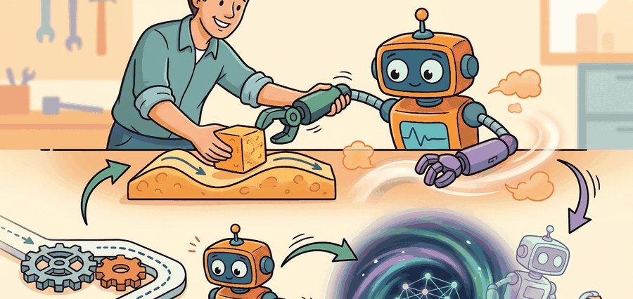

Section 21.5: Sources of demonstrations: humans, planners, foundation models

Figure 21.5A: Section 21.5: Sources of demonstrations: humans, planners, foundation models is easier to reason about when the figure shows the concept, evidence path, and action consequence in one physical situation.
A Careful Control Loop
Big Picture
Demonstrations can come from human teleoperators, planners, scripted controllers, foundation models, or mixtures of all four. The source determines what biases, coverage gaps, and safety assumptions enter the dataset.
This section develops the technical contract for sources of demonstrations: humans, planners, foundation models into a usable mental model. First we define the object of study, then we connect it to the agent loop, then we test it with a compact implementation.
The key question in Sources of demonstrations: humans, planners, foundation models is practical: what must the agent know, what can it observe, what action is available, and what evidence shows that the action worked under the stated conditions?
Action Is The Test
A representation earns its place when it changes the measurable action interface. In sources of demonstrations: humans, planners, foundation models, the reader should keep asking which decision becomes easier, safer, or more reliable.
Theory
For Sources of demonstrations: humans, planners, foundation models, the practical design rule is to make the interface inspectable before optimization begins: inputs, outputs, units, latency, bounds, and failure labels should all be visible in the saved artifact.
Mechanism
The mechanism in Sources of demonstrations: humans, planners, foundation models is the contract between representation and action. Name what enters the module, what leaves it, which assumptions make that transformation valid, and which log would reveal a bad handoff.
Worked Example
For Sources of demonstrations: humans, planners, foundation models, keep one concrete rollout in view. A sensor reading becomes an estimate, the estimate constrains an action, the action changes the world, and the next observation confirms or contradicts the assumption. The section's idea is useful only if it improves that loop.
from pathlib import Path
dataset_root = Path("robot_demos")
for episode in sorted(dataset_root.glob("episode_*")):
print("inspect", episode.name)
print("next step: convert demonstrations to the LeRobotDataset format")
next step: convert demonstrations to the LeRobotDataset format
Code Fragment 21.5.1 inspects the local demonstration folder and prints the conversion target for this section. The point is to surface the data interface for Sources of demonstrations: humans, planners, foundation models before LeRobotDataset or robomimic takes over storage, batching, and visualization.
Expected output: the printed trace for Sources of demonstrations: humans, planners, foundation models should expose the method configuration, the measured evidence field, and the failure label. If one of those fields is missing or unchanged under the perturbation, the example is not yet an evaluation artifact.
Library Shortcut
Use LeRobot dataset metadata, ROS 2 bags, planner logs, and model-proposal records together, but preserve source ID, confidence, filtering rule, and approval status before merging data for policy training.
Teleop, Planner, And Foundation-Model Demonstrations
Demonstration source changes what the learner can trust. Human teleoperation captures real recovery habits and contact timing, but it also carries operator bias, latency, fatigue, and hardware-specific conventions. Planner demonstrations can be cheap and precise in simulation, but they may avoid perception errors and contact surprises. Foundation-model demonstrations can provide semantic breadth, but they need grounding checks before their action traces are treated as robot data.
Demonstration Source Audit
Source
Strength
Risk To Record
Best Use
Human teleoperation
Real contact and recovery behavior
Operator latency, fatigue, style, and intervention rules
Proposal generation, annotation, and curriculum design
Code Fragment 3 turns those distinctions into a provenance scorecard. The goal is not to rank sources universally, but to decide which source is credible for the evaluation question at hand.
# Score demonstration sources for a contact-rich tabletop task.
# Higher scores mean better match to hardware, coverage, and auditability.
sources = {
"human_teleop": {"hardware": 3, "coverage": 2, "audit": 2},
"planner_sim": {"hardware": 1, "coverage": 3, "audit": 3},
"foundation_model": {"hardware": 1, "coverage": 3, "audit": 1},
}
for source, scores in sources.items():
total = sum(scores.values())
print(source, total, scores)
Code Fragment 3: The scorecard separates hardware fidelity, coverage, and auditability. Human teleoperation and planner simulation tie numerically here, but the component scores reveal that they answer different data needs.
Production Recipe
For a serious robot-data release, include a data card with robot embodiment, camera placement, control frequency, action units, operator interface, reset policy, intervention policy, license, and split construction. LeRobot and robomimic can carry the data, but they cannot infer missing provenance after collection.
Practical Recipe
Write the observation, action, and success metric before choosing a model.
Build a baseline that is simple enough to debug by inspection.
Add the library implementation only after the baseline behavior is understood.
Record failures as structured cases: perception error, state error, planning error, control error, or evaluation error.
Run at least one perturbation test before trusting the result.
Common Failure Mode
The common mistake in Sources of demonstrations: humans, planners, foundation models is to celebrate the component score before checking the closed-loop handoff. The failure usually appears at the boundary: stale state, wrong frame, delayed action, saturated actuator, or metric that ignores the real task cost.
Practical Example
A robot learning engineer applying sources of demonstrations: humans, planners, foundation models starts by recording the robot body, camera setup, action units, operator source, and split policy for every episode. That record makes it possible to compare LeRobot with a baseline without changing the task definition midstream.
Memory Hook
For sources of demonstrations: humans, planners, foundation models, the useful test is simple: could a teammate point to the log line, plot, or trace that proves the idea changed the agent's next action?
Research Frontier
For Sources of demonstrations: humans, planners, foundation models, treat frontier claims as hypotheses until they expose enough detail to reproduce the result: data boundary, embodiment, controller interface, evaluation panel, and failure cases.
Self Check
Can you name the observation, state estimate, action, success metric, and most likely failure mode for sources of demonstrations: humans, planners, foundation models? If not, the system boundary is still too vague.
Sources of demonstrations: humans, planners, foundation models becomes useful when it is tied to a closed-loop contract. In this Part V section on Sources of demonstrations: humans, planners, foundation models, the contract names the observation stream, the state estimate, the action representation, the timing budget, and the evaluation artifact. Without that contract, a model can look capable in a notebook while failing the first time a sensor drops a frame or a controller saturates.
For Sources of demonstrations: humans, planners, foundation models, separate the conceptual claim, the systems claim, and the evidence claim. A plausible mechanism, a clean interface, and a closed-loop result are different claims; the section should keep their evidence separate.
Practical Tool Choices For This Section
Tool or Library
Role in the Topic
Builder Advice
Gymnasium
Sources of demonstrations: humans, planners, foundation models
Use it when the experiment needs a maintained implementation rather than custom glue.
PettingZoo
Sources of demonstrations: humans, planners, foundation models
Use it when the experiment needs a maintained implementation rather than custom glue.
ROS 2
Sources of demonstrations: humans, planners, foundation models
Use it when the experiment needs a maintained implementation rather than custom glue.
MuJoCo
Sources of demonstrations: humans, planners, foundation models
Use it when the experiment needs a maintained implementation rather than custom glue.
LeRobot
Sources of demonstrations: humans, planners, foundation models
Use it when the experiment needs a maintained implementation rather than custom glue.
For Sources of demonstrations: humans, planners, foundation models, start with a small baseline that logs inputs, outputs, units, timestamps, and termination conditions before moving to Gymnasium or PettingZoo. The library run should keep the same artifact schema, so the comparison remains a same-task evaluation.
Write a one-paragraph task contract with observation, action, success, and failure fields.
Start with the smallest simulator, dataset, or wrapper that exposes the task contract faithfully.
Run one deterministic smoke test and one perturbation test before scaling.
Save a single result artifact containing configuration, seed, metrics, videos or traces, and failure labels.
Compare methods only when one script evaluates them on the same task panel.
When Sources of demonstrations: humans, planners, foundation models fails, avoid labeling the whole method as weak. First assign the failure to perception, state estimation, planning, control, timing, data coverage, or evaluation. Then rerun one controlled perturbation that isolates the suspected cause. This pattern turns a disappointing rollout into a reusable diagnostic asset.
Agent Checklist Integration
Sources of demonstrations: humans, planners, foundation models should be evaluated through four lenses: the learning objective, the robot interface, the data artifact, and the deployment failure mode. A demonstration is not a self-sufficient label; it is a trajectory sampled from an expert distribution that the learned policy will later disturb.
For demonstration sources, the workflow is source triage: compare human teleoperation, scripted planners, foundation-model proposals, and self-supervised corrections by coverage, bias, cost, safety, and action fidelity.
Mental Model: Demonstrations As Contracts
A mixed-source demonstration set is a contract over provenance. Human traces, planner traces, and model-generated traces need separate labels because each source creates different biases and failure modes.
Decision Checklist for Sources of demonstrations: humans, planners, foundation models
Agent Lens
Question To Answer
Concrete Evidence
Curriculum and depth
What concept is new here, and why does Part V need it?
A definition, a worked example, and a failure case tied to the perception-action loop.
Code and tools
Which maintained tool removes boilerplate after the from-scratch baseline?
LeRobot, robomimic, DAgger, behavior cloning, dataset aggregation evaluated against the same task contract.
Data and evaluation
What distribution produced the behavior, and where can it break?
Train, validation, and stress splits with explicit robot, camera, timing, and license metadata.
Publication quality
Can the reader reproduce the claim without hidden context?
Captions, bibliography cards, cross-links, and a same-artifact audit trail.
Pitfall: Generic Success Claims
Do not claim that sources of demonstrations: humans, planners, foundation models improves robot learning unless the baseline and the proposed method share the same robot, task split, reset distribution, success metric, and random seed policy. Otherwise the comparison may be measuring dataset difficulty rather than method quality.
Current Research Thread
For Sources of demonstrations: humans, planners, foundation models, modern imitation systems should be audited as synchronized robot data: images, proprioception, language, actions, timing, operator metadata, and covariate-shift checks.
Application Example
Who: A data curator combining teleoperation, motion-planner rollouts, and VLA-generated proposals for a household robot.
Situation: The engineer needs to decide whether sources of demonstrations: humans, planners, foundation models is ready for a weekly policy comparison across 120 demonstrations and 30 held-out rollouts.
Decision: For Sources of demonstrations: humans, planners, foundation models, keep the minimal imitation baseline and compare LeRobot or robomimic only on the same manifest, split, seed policy, and rollout evaluator.
Result: The artifact is a source-balanced manifest with provenance, coverage, filtering decisions, rejected samples, and per-source rollout performance.
Lesson:Demonstration sources earn trust when provenance is visible enough to diagnose which source caused a policy behavior.
Sources of demonstrations: humans, planners, foundation models is useful when it makes the perception-action loop more reliable, not when it merely adds a more impressive model name.
Exercise 21.5.1
Design a method-matched experiment for Sources of demonstrations: humans, planners, foundation models. Specify the environment, observation schema, action interface, metric, and one perturbation that targets the section's core assumption.
What's Next
This section grounded sources of demonstrations: humans, planners, foundation models in an explicit robot-data contract: observations, actions, demonstrations, evaluation splits, and failure labels. The next reading step is Chapter 22: Action Chunking and Diffusion Policies, where the same contract is carried into the next technique or chapter.
This paper introduces DAgger, the standard fix for covariate shift in sequential imitation learning. Read it when behavior cloning fails after the policy visits states that the demonstrator rarely produced.
robomimic gives reusable datasets, baselines, and evaluation scripts for demonstration-based manipulation. It is the right tool when a section needs a reproducible behavior cloning or offline imitation baseline.
LeRobot standardizes models, datasets, and training utilities for real-world robotics in PyTorch. It is especially useful for connecting small demonstration experiments to shared dataset formats on the Hugging Face Hub.
ALVINN is an early example of learning control from demonstrations and sensor inputs. It helps readers see that imitation learning's central distribution problem predates modern deep robot policies.
The dataset documentation shows how demonstrations, task metadata, and evaluation splits are packaged for reproducible robot learning. Practitioners should read it before inventing a custom data layout.